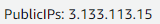

Welcome to the Amazon Web Services Server Setup tutorial! This will show you how to setup the server you created in the last tutorial (commands, editing files, and more)! There will be pictures so that you can follow along! Without further to do, lets get started!
Step 1: Click on your server instance and click "Connect"
Step 2: Click on "Connect" at the bottom. Leave everything else alone.
Step 3: Welcome to your terminal! Click inside the terminal window (the black area) and type "sudo yum update." Type Y and press Enter if it asks you.
Step 4: Type "sudo yum install httpd" to install your web server. Type "Y" when asked and wait for it to finish.
Step 5: Type "sudo service httpd start" to start your web server.
Step 6: Find your public IP address at the lower left side of the page and type that in to your address bar/search bar
Step 7: Look at your hrand new server with webpage! Yes, it is the default page, but their are tutorials out there that can explain more about how to make it your own. Say a custom domain and a custom webpage!
Congrats! You have done it! You have signed up for an AWS account, create a server, and set it up! I hope you enjoy what you have created and have a great day!